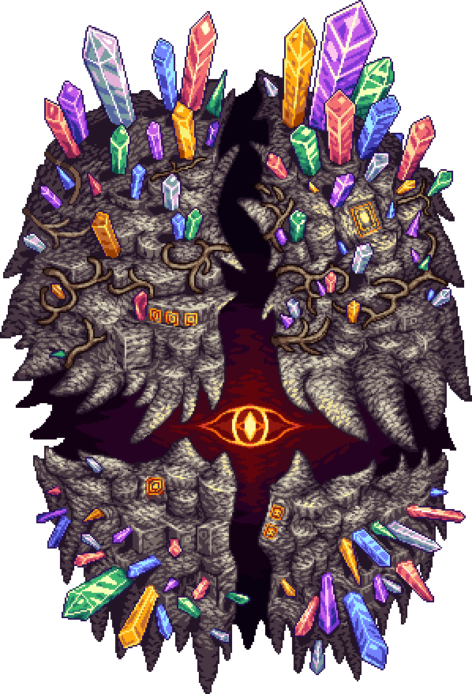

My works!
Pinkymod
Pinkymod is a mod, a player-created game enhancement for the bestselling video game 'Terraria.' First created in 2017, I had worked on it up until 2022, by which it has had over 400,000 total downloads by 60,000+ unique individuals from all over the globe.
The mod is very much revolutionary in many ways, being the first mod to add dimensions to the game, as well as building-based magical technology. It also features over 1100 new unique items, 9 new bosses, several of the aforementioned dimensions and an intricate if rather cringe-worthy lore to go along with it.
Since 2022, development of the mod has stopped. However, it's mythos lives on in the form of Harpy Raiders, which has rectified many of it's flaws.
Zachariel
Zachariel is a game I made all the way back in 2018, when I was secondary 2. It was made for android devices and ran on Monogame using a custom engine I cobbled up in several weeks. You play as Zachariel, a boy suffering from anxiety disorder and help him fight off waves of enemies that represent different aspects of anxiety disorder, all while having to deal with a very obstructive voice in his head.
It reflected the anxiety disorder I was suffering from at that time, which completely debilitated me in a school environment. The game however, scored amongst the highest for the project it was made for, and also received critical acclaim from a senior educational psychologist.
Zachariel was my first actual game, and it was a enlightening experience for me. Since then, I have gone on to recover from the worst of the effects of anxiety disorder and have come back stronger.
A Void Fantasy
A Void Fantasy is a game I made in 2021 for the first assignment in the first year of my schooling at Singapore Polytechnic's Game Design and Development course. It was made in Unity as the course required so, but using a custom collision system instead of Rigidbodies.
It follows the story of a boy named Caleb exploring a place now known as the World Below. A massive cave system that serves as subterrenean garbage dump where all things forgotten by humanity go to rot, Caleb dreams that he has ended up in this place alongside his friends, and must go and save them before they can make their escape! The story will be elaborated upon in the future in two games, the planned Project Katabasis and Project Paradise.
A Void Fantasy taught me the basics of using Unity, including it's component workflow, tilesets, how to manually query collisions without rigidbodies, as well as the pitfalls of object-oriented programming.

Recollection
Recollection is a game about a recently deceased man who has found himself in limbo. In order to move on, he must venture through the strange black-and-white landscape to collect fragments of his face and along with it, his memories. But perhaps some memories are better off left uncollected...
It was a team project for the first term of my diploma course proper. I worked on it as the lead programmer and musician, producing most code needed to run the game, including it's boss fight, physics and more. I also contributed some art assets, and 2 music tracks. It is a sizeable game, with up to 2 hours of playtime.
Recollection taught me about game and level design, as well as gave me space to experiment around with ideas. It received the sole distinction out of all teams in the cohort.
Blight
Blight is the third game made for my course. It is a mobile game that follows a man who had survived an unnamed apocalypse, which has desolated the land. Now, he runs a shelter to care for survivors, not out of the goodness of his heart, but from guilt for abandoning his daughter when the apocalypse started.
As de-facto team leader, I was in charge of managing many aspects of development, which allowed me to better prepare for my first commercial venture. Thanks to my efforts, we were able to land another distinction grade.
Blight is once again coded in Unity, with numerous new innovations made for the codebase, including the introduction of ObjectDictionaries for serialization, mobile controls including touchscreen and virtual joysticks and more.

Linx Simulator
Linx Simulator is the fourth game made for the course. It rather humorously, simulates my day-to-day experience coding away at a computer within the depths of my mind. It is one of my favourite projects, and it absolutely ruined everyone's day by destroying the bell curve.
The game features a fully working computer, which you can code C# on. Thereafter, you can also save the code into your actual machine and compile and run it, which is necessary to progress the game. By executing certain commands in the C# code, you can interact with the game world around you.
More deeply, it tells the story of a conflicted mind sworn to duty, yet having to deal with intrusive thoughts (IE: Russell). It deals with the reality of living with Dissociative Identity Disorder, of which I experience. Being able to tell this story has made me much more confident in myself.